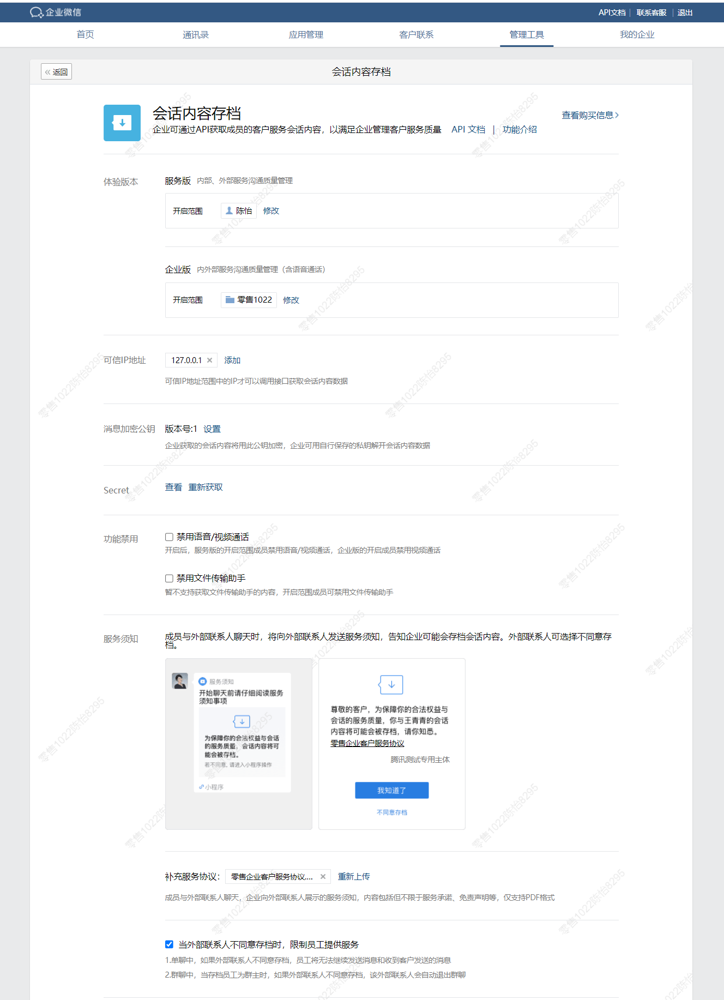

管理端使用帮助
1、管理后台开启会话内容存档，开启前需设置开启范围、IP地址及消息加密公钥（注：员工的企业微信需升级到2.8.9版本及以上），开启后：
- 开启存档的员工登录客户端，进入企业后会经过告知页面，获知后可继续使用
- 企业可以获取开启存档的员工和未开启员工之间的会话内容，但不能获取未开启员工之间的会话内容
2、后续可修改相关设置，包括调用IP、消息加密公钥、功能禁用等。

关于获取会话内容
1、员工在企业内的会话内容，经告知员工后，企业可通过API获取。
2、员工与外部联系人的会话内容，经外部联系人同意后，企业可通过API获取。